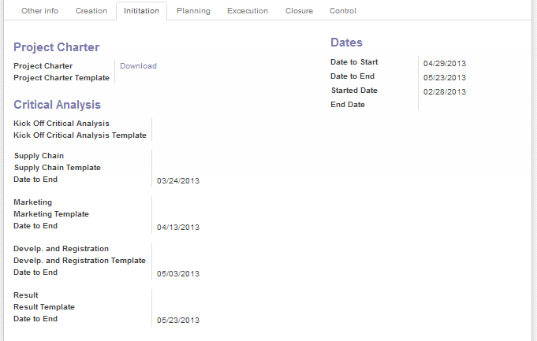
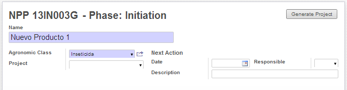
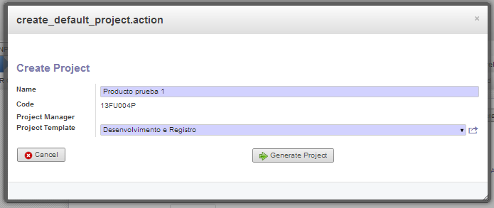
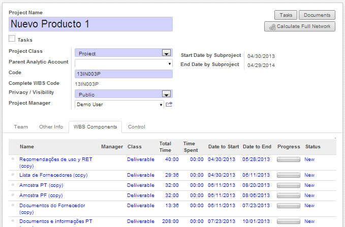
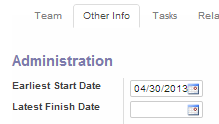
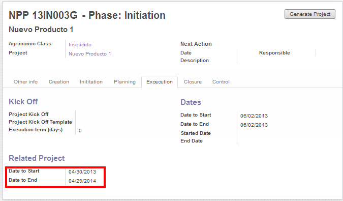
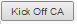

Preliminary Project Planning |
  
|
Preliminary Project Planning |
|
Una vez aprobado el Acta de proyecto, se deberá hacer una estimación de los plazos de duración de los paso venideros para validar que se puede finalizar el proceso completo antes de la fecha deseada por el Sponsor (Project expected end date).
Al aprobar el Acta de proyecto, automaticamente se completan las fechas estimadas de finalización de cada una de las etapas del Análisis Critica, basadas en parámetros cargados por el administrador.

Estas fechas deben ser negociadas con cada uno de los departamentos involucrados. Una vez definidas, se debe tener en cuenta el plazo estimado de duración de la ejecución del proyecto.
Sera necesario en esta instancia crear un Proyecto para el seguimiento y gestión de la Ejecución.
1.Crear un Proyecto y vincularlo al documento actual. Para ello, desde el encabezado del documento hacer clic en "Generate Project".

Esto abrira el siguiente asistente para la generación del Proyecto:
•Asignar un Nombre al Proyecto
•Seleccionar un template a partir del cual se generara el Proyecto. Este debería seleccionarse según el tipo de producto a desarrollar.
•Hacer clic en Generate Project.

Una vez generado el Proyecto, se podrán editar los componentes del mismo y se deberá actualizar la fecha de inicio con la fecha "Date to start" de la Fase ejecución (es igual a la fecha de finalización de la ultima etapa del análisis critica + tiempo para la planificación). (Por defecto la fecha de iniciación del procto es la fecha actual).
Para modificar la fecha de inicio:
•Dirigirse al menu: Project/Project/Project y abrir el modo edición del proyecto en cuestión.

•En la solapa WBS Components se encuentran todos los entregables del proyecto. Ingresar a los entregables que no tengan predecesores (o sea las actividades iniciales) y actualizar las fechas desde la solapa "Other Info"/ Earliest Start Date"

•Hacer clic en .
Esto actualizara el inicio y fecha de finalización estimada del proyecto. Esta información puede visualizarse en el documento de Alta de producto en la solapa de Ejecución:

Una vez planificado el proyecto, se sabra la duración planificada del mismo.
Ingresar este dato en "Execution term (days) y hacer clic en Save.
Esto actualizara el campo "Date to end" de la Fase Ejecución. Si esta fecha no supera la fecha deseada por el Sponsor entonces se puede hacer el Kick Off del Análisis Critica. De lo contrario se deberá repetir la planificación recalculando las fechas de modo de lograr con el objetivo planteado.
Para hacer el Kick Off se debe adjuntar el Documento "Kick Off Critical Análisis" y luego hacer clic en .
Luego se deberán adjuntar los 4 documentos asociadas a las 3 análisis criticas de los distintos departamentos y el Resultado General del Análisis Critica:
•DR